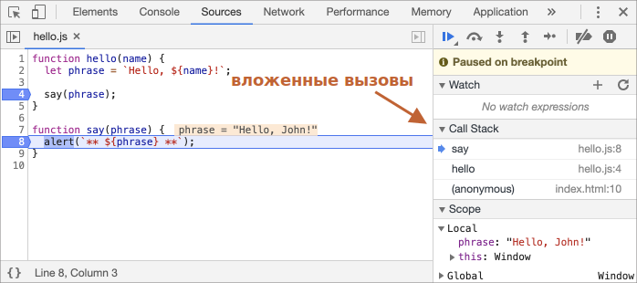

Отладка в браузере
Давайте отвлечёмся от написания кода и поговорим о его отладке.
Отладка – это процесс поиска и исправления ошибок в скрипте. Все современные браузеры и большинство других сред разработки поддерживают инструменты для отладки – специальный графический интерфейс, который сильно упрощает отладку. Он также позволяет по шагам отследить, что именно происходит в нашем коде.
Мы будем использовать браузер Chrome, так как у него достаточно возможностей, в большинстве других браузеров процесс будет схожим.
Панель «Исходный код» («Sources»)
Версия Chrome, установленная у вас, может выглядеть немного иначе, однако принципиальных отличий не будет.
- Работая в Chrome, откройте тестовую страницу.
- Включите инструменты разработчика, нажав F12 (Mac: Cmd+Opt+I).
- Щёлкните по панели
Sources(«исходный код»).
При первом запуске получаем следующее:
Кнопка-переключатель откроет вкладку со списком файлов.
Кликните на неё и выберите hello.js в дереве файлов. Вот что появится:

Интерфейс состоит из трёх зон:
- В зоне File Navigator (панель для навигации файлов) показаны файлы HTML, JavaScript, CSS, включая изображения, используемые на странице. Здесь также могут быть файлы различных расширений Chrome.
- Зона Code Editor (редактор кода) показывает исходный код.
- Наконец, зона JavaScript Debugging (панель отладки JavaScript) отведена для отладки, скоро мы к ней вернёмся.
Чтобы скрыть список ресурсов и освободить экранное место для исходного кода, щёлкните по тому же переключателю .
Консоль
При нажатии на клавишу Esc в нижней части экрана вызывается консоль, где можно вводить команды и выполнять их клавишей Enter.
Результат выполнения инструкций сразу же отображается в консоли.
Например, результатом 1+2 будет 3, а вызов функции
hello("debugger") ничего не возвращает, так что результатом будет undefined:

Точки останова (breakpoints)
Давайте разберёмся, как работает код нашей тестовой
страницы. В файле hello.js щёлкните на номере строки 4. Да-да,
щёлкайте
именно по самой цифре, не по коду.
Ура! Вы поставили точку останова. А теперь щёлкните по цифре 8 на восьмой линии.
Вот что в итоге должно получиться (синим это те места, по которым вы должны щёлкнуть):

Точка останова – это участок кода, где отладчик автоматически приостановит исполнение JavaScript.
Пока исполнение поставлено «на паузу», мы можем просмотреть текущие значения переменных, выполнить команды в консоли, другими словами, выполнить отладку кода.
В правой части графического интерфейса мы видим список точек останова. А когда таких точек выставлено много, да ещё и в разных файлах, этот список поможет эффективно ими управлять:
- Быстро перейдите к точке останова в коде (нажав на неё на правой панели).
- Временно отключите точку останова, сняв с неё галочку.
- Удалите точку останова, щёлкнув правой кнопкой мыши и выбрав Remove (Удалить).
- …и так далее.
Щелчок правой кнопкой мыши по номеру строки позволяет создать условную точку останова. Она сработает только в тот момент, когда выражение, которое вы должны указать при создании такой точки, истинно.
Это удобно, когда нам нужно остановиться только для при определённом значении переменной или для определённых параметров функции.
Команда debugger
Выполнение кода можно также приостановить с помощью команды debugger прямо изнутри
самого
кода:
function hello(name) {
let phrase = `Привет, ${name}!`;
debugger; // <-- тут отладчик остановится
say(phrase);
}Такая команда сработает только если открыты инструменты разработки, иначе браузер ее проигнорирует.
Остановимся и оглядимся
В нашем примере функция hello() вызывается во время загрузки страницы, поэтому для
начала
отладки (после того, как мы поставили точки останова) проще всего её перезагрузить. Нажмите
F5 (Windows, Linux) или Cmd+R (Mac).
Выполнение прервётся на четвёртой строчке (где находится точка останова):
Чтобы понять, что происходит в коде, щёлкните по стрелочкам справа:
-
Watch– показывает текущие значения для любых выражений.Вы можете нажать на
+и ввести выражение. Отладчик покажет его значение, автоматически пересчитывая его в процессе выполнения. -
Call Stack– показывает цепочку вложенных вызовов.В текущий момент отладчик находится внутри вызова
hello(), вызываемого скриптом вindex.html(там нет функции, поэтому она называется “анонимной”).Если вы нажмёте на элемент стека (например, «anonymous»), отладчик перейдёт к соответствующему коду, и нам представляется возможность его проанализировать.
-
Scopeпоказывает текущие переменные.Localпоказывает локальные переменные функций, а их значения подсвечены прямо в исходном коде.В
Globalперечисляются глобальные переменные (то есть вне каких-либо функций).Там также есть ключевое слово
this, которое мы ещё не изучали, но скоро изучим.
Пошаговое выполнение скрипта
А теперь давайте пошагаем по нашему скрипту.
Для этого есть кнопки в верхней части правой панели. Давайте рассмотрим их.
-
– «Resume»: продолжить выполнение, быстрая клавиша F8.
-
Возобновляет выполнение кода. Если больше нет точек останова, то выполнение просто продолжается, без контроля отладчиком.
Вот, что мы увидим, кликнув на неё:
Выполнение кода возобновилось, дошло до другой точки останова внутри
say(), и отладчик снова приостановил выполнение. Обратите внимание на пункт «Call stack» справа: в списке появился ещё один вызов. Сейчас мы внутриsay(). - – «Step»: выполнить следующую команду, быстрая клавиша F9.
-
Выполняет следующую инструкцию. Если мы нажмём на неё сейчас, появится
alert.Нажатие на эту кнопку снова и снова приведёт к пошаговому выполнению всех инструкций скрипта одного за другим.
- – «Step over»: выполнить следующую команду, но не заходя внутрь функции, быстрая клавиша F10.
-
Работает аналогично предыдущей команде «Step», но ведёт себя по-другому, если следующая инструкция является вызовом функции (имеется ввиду: не встроенная, как
alert, а объявленная нами функция).Если сравнить, то команда «Step» переходит во вложенный вызов функцию и приостанавливает выполнение в первой строке, в то время как «Step over» выполняет вызов вложенной функции незаметно для нас, пропуская её внутренний код.
Затем выполнение приостанавливается сразу после вызова функции.
Это хорошо, если нам не интересно видеть, что происходит внутри вызова функции.
- – «Step into», быстрая клавиша F11.
-
Это похоже на «Step», но ведёт себя по-другому в случае асинхронных вызовов функций. Если вы только начинаете изучать JavaScript, то можете не обращать внимания на разницу, так как у нас ещё нет асинхронных вызовов.
На будущее просто помните, что команда «Step» игнорирует асинхронные действия, такие как
setTimeout(вызов функции по расписанию), которые выполняются позже. «Step into» входит в их код, ожидая их, если это необходимо. См. DevTools manual для получения более подробной информации. - – «Step out»: продолжить выполнение до завершения текущей функции, быстрая клавиша Shift+F11.
-
Продолжает выполнение и останавливает его в самой последней строке текущей функции. Это удобно, когда мы случайно вошли во вложенный вызов, используя , но это нас не интересует, и мы хотим продолжить его до конца как можно скорее.
- – активировать/деактивировать все точки останова(breakpoints).
-
Эта кнопка не влияет на выполнение кода, она лишь позволяет массово включить/отключить точки останова.
- – включить/отключить автоматическую паузу в случае ошибки.
-
При включении, если открыты инструменты разработчика, ошибка при выполнении скрипта автоматически приостанавливает его. Затем мы можем проанализировать переменные в отладчике, чтобы понять, что пошло не так. Поэтому, если наш скрипт умирает с ошибкой, мы можем открыть отладчик, включить эту опцию и перезагрузить страницу, чтобы увидеть, где он умирает и каков контекст в этот момент.
Щелчок правой кнопкой мыши по строке кода открывает контекстное меню с отличной опцией под названием «Continue to here» («продолжить до этого места»).
Это удобно, когда мы хотим перейти на несколько шагов вперёд к строке, но лень устанавливать точку останова (breakpoint).
Логирование
Чтобы вывести что-то на консоль из нашего кода, существует функция console.log.
Например, это выводит в консоль значения от 0 до 4:
// чтобы увидеть результат, сначала откройте консоль
for (let i = 0; i < 5; i++) {
console.log("value,", i);
}Обычный пользователь сайта не увидит такой вывод, так как он в консоли. Чтобы увидеть его, либо откройте консольную панель инструментов разработчика, либо нажмите Esc, находясь в другой панели: это откроет консоль внизу.
Если правильно выстроить логирование в приложении, то можно и без отладчика разобраться, что происходит в коде.
Итого
Приостановить выполнение скрипта можно тремя способами:
- Точками останова (breakpoints).
- Использованием в коде команд
debugger. - При ошибке (если инструменты разработчика открыты и кнопка «включена»).
При остановке мы можем отлаживать: анализировать переменные и пошагово пройти по процессу, чтобы отыскать проблему.
В инструментах разработчика гораздо больше опций, чем описано здесь. С полным руководством можно ознакомиться на https://developers.google.com/web/tools/chrome-devtools.
Информации из этой главы достаточно, чтобы начать отладку, но позже, особенно если вы много работаете с браузером, пожалуйста, перейдите туда и ознакомьтесь с расширенными возможностями инструментов разработчика.
И, конечно, вы можете просто кликать по различным местам инструментов разработки и смотреть, что при этом появляется. Пожалуй, это наискорейший способ ими овладеть. Не забывайте про правый клик мыши и контекстные меню!